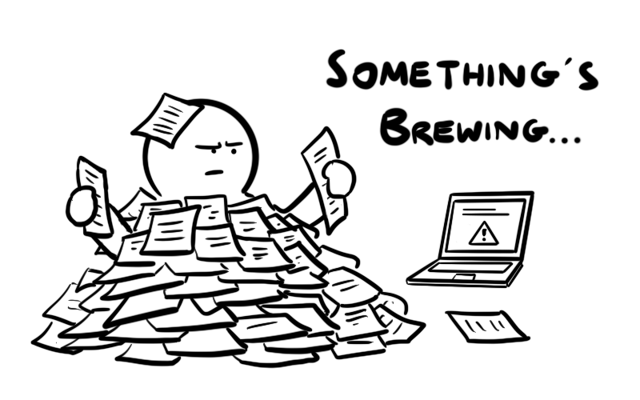

elijahtan@uchicago.edu
I plan to assemble here some of the moments and projects from my astrophysics classes that I'd like to record for posterity. Candidates currently include my very first remote observational experience using Stone Edge Observatory, and a nightmarish Mechanics class that set the tone for everything physics related to come.
